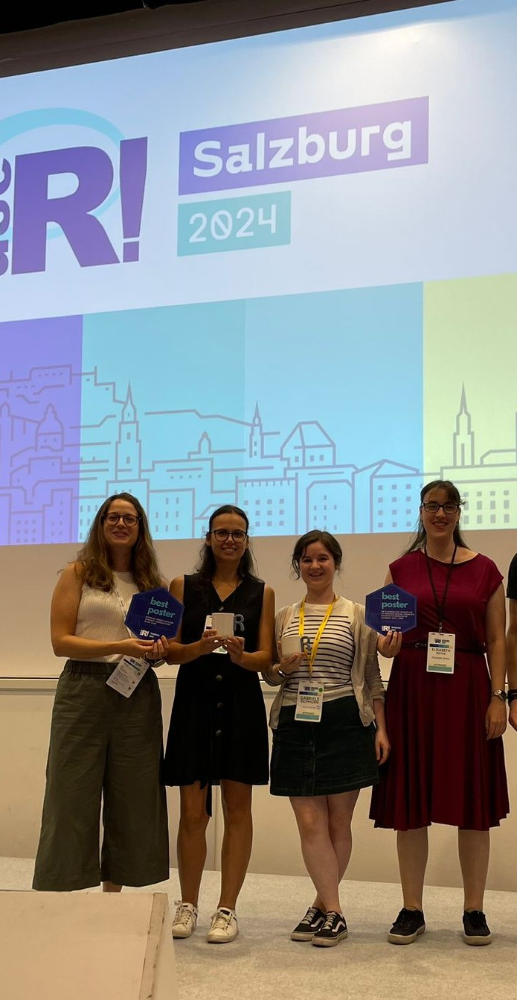
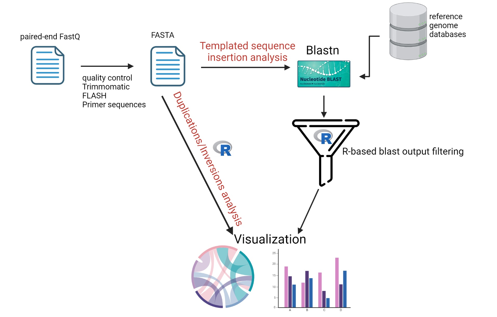

Ekaterina Akimova-Höpner, founder of the R-Ladies Salzburg chapter, recently spoke with the R Consortium about using R to support cutting-edge cancer research and building a local R community in Austria. Ekaterina shared how she uses R for data preprocessing, statistical modeling, and visualizing high-dimensional genomic datasets. She discussed the launch of R-Ladies Salzburg in 2024, the importance of hands-on workshops for early-career researchers, and how scientific collaboration continues to shape her approach to community building. She also highlighted her talk last year at the useR! Conference 2024, where she presented tools for reproducible research in biomedical science.

Please share your background and involvement with the RUGS group.
I come from a background in medical biology, with a strong focus on cancer research. I completed my PhD at the University of Salzburg, where I investigated tumor genetics and immune evasion mechanisms, particularly in leukemia, with a focus on chronic lymphocytic leukemia. Initially, my work was purely wet lab-based, but it quickly evolved into a combination of both experimental and computational biology. This dual focus naturally led me to the R programming environment, which has become an essential part of my daily work.
During my doctoral studies, I started using R for statistical analysis and data visualization. As my projects became more complex and my research questions grew more intricate, I began building pipelines and analysis workflows in R, utilizing packages from Bioconductor, Tidyverse, and various other resources.
My passion for the language and the broader community grew as I discovered the power and accessibility of the R environment. This enthusiasm ultimately led me to establish the R-Ladies Salzburg chapter last year, in 2024, as there were no local user groups in the area.
At that time, it felt right to organize a group explicitly focused on supporting gender minorities in tech and science. I noticed a significant gap in the community that I was eager to fill. Establishing this chapter provided me with the invaluable opportunity to create an inclusive space for women in the science and data science communities in Salzburg.
In our first year, 2024, I planned and organized four meetups, ranging from beginner R workshops to networking events. During this time, I connected with members and organizers from all over the world, which was an enriching experience. I was fortunate to be involved in organizing last year’s useR! conference, which took place in Salzburg. One of my most rewarding moments was presenting my R package, which is in development for analyzing amplicon sequence data. I was honored to receive the Best Poster award, and the positive feedback I received strengthened my desire to give back to the community and support others on their R journey.

Being part of the R-Ladies global community has broadened my horizons, and I have improved my public speaking, mentorship, and event organization skills.
What challenges have you faced in organizing the group?
The first challenge we faced was working with the Meetup platform, which is the tool of choice for R user group meetups. It isn’t very well established, so not many people are familiar with it. In addition to Meetup, we also use Slack and LinkedIn for communication. While Meetup does send notifications to those who sign up, it is challenging to reach a new audience through it. Therefore, enhancing our presence on LinkedIn will help ensure that more people are aware of our events.
Please share about a project you are currently working on or have worked on in the past using the R language. Goal/reason, result, anything interesting, especially related to the industry you work in?
Let me share my project on detecting complex rearrangements in next-generation sequencing data. The project aims to create a tool for detecting and characterizing complex genomic rearrangements, specifically templated sequence insertions, duplications, and inversions, using next-generation sequencing data. Previous studies have demonstrated that aberrant DNA double-strand break repair is a common feature in various types of cancer. In our earlier research, we discovered that these breaks can lead to genomic alterations that are not captured by standard variant-calling tools currently in use. For instance, we found evidence that high intracellular dNTP levels, observed in SAMHD1-deficient cells, promote increased templated sequence insertions.

To quantify and characterize these events, we needed a pipeline capable of handling these datasets and performing filtering, characterization, and visualization. I chose to use R for this task because I felt more confident programming in R at the time. I developed an R-based pipeline utilizing packages from Bioconductor, including IRanges and GenomicRanges, along with base R and the Tidyverse.
The package takes over after the initial preprocessing steps of sequencing data, which include trimming, stitching, and BLAST alignment. It processes data downstream to detect sequence aberrations directly from FASTQ sequences or BLAST results, depending on what the research requires. One of the key features of our pipeline is the self-comparison metrics algorithm, which identifies internal duplications within the sequence reads.
Currently, the project isn’t widely available on the market, but it is in progress. Parts of it have been published, and we are using the packages internally at the institute. The goal is to submit it to Bioconductor once it is fully completed, and we are nearing that finish line.
This project primarily aimed to answer our main research question, and we successfully achieved this goal. We applied the same pipeline to other projects to address similar questions, focusing on how to significantly reduce the frequency of duplications while suggesting a novel role of a specific protein in maintaining genomic stability. The clinical relevance of these findings will be determined through future studies.
This project has significantly expanded my understanding of genomic structures and the approach to addressing these questions through programming. It has enabled me to visualize and filter out genomic aberrations, thereby clarifying biologically relevant findings.
Is this an ongoing project? Please share any details or CTA for who should get involved!
My main current project marks my first step into self-employment, leveraging my expertise in academic research, biomedicine, and data science, with a focus on consulting and science education. A significant aspect of this project involves teaching data literacy and programming, particularly using R, to complete beginners, including those from non-technical backgrounds such as the humanities, social sciences, and creative disciplines. I’m currently developing a course for absolute beginners, designed to demystify data tools and help learners build confidence through hands-on, approachable content.
What makes this project meaningful to me is that I’m not just teaching code, I’m guiding people through the anxiety of starting something new, helping them see that they don’t have to be math geniuses or seasoned programmers to understand data. I aim to help people feel empowered, not intimidated, by the world of data.
To complement this technical side, I’m also working on a course called “Mindful Doctorate,” which addresses the emotional challenges of doing a PhD. It’s based on my own academic experiences and the conversations I’ve had with peers. Many doctoral candidates struggle silently with imposter syndrome or isolation. This course will offer practical strategies for navigating that journey with greater mental clarity.
The common thread is to bridge technical knowledge with human communication and resilience. Learning should not only make you smarter, but also stronger and more self-aware.
Long-term, this will evolve into a hybrid offering, comprising online courses, live workshops, community-based projects, and one-on-one mentoring or consulting in research workflows. I’m particularly interested in collaborating with clients or institutions that aim to integrate data skills into interdisciplinary settings.
To summarize, my ongoing project primarily focuses on helping people find ways to realize their ideas or research objectives and to understand their data. So, whether you are analyzing a complex dataset, managing a project in the wet lab, or searching for a novel solution, feel free to connect with me on LinkedIn, and I’d be happy to chat.
How do I Build an R User Group?
R Consortium’s R User Group and Small Conference Support Program (RUGS) provides grants to help R groups organize, share information, and support each other worldwide. We have given grants over the past four years, encompassing over 76,000 members in over 90 user groups in 39 countries. We would like to include you! Cash grants and meetup.com accounts are awarded based on the intended use of the funds and the amount of money available to distribute.
Learn more